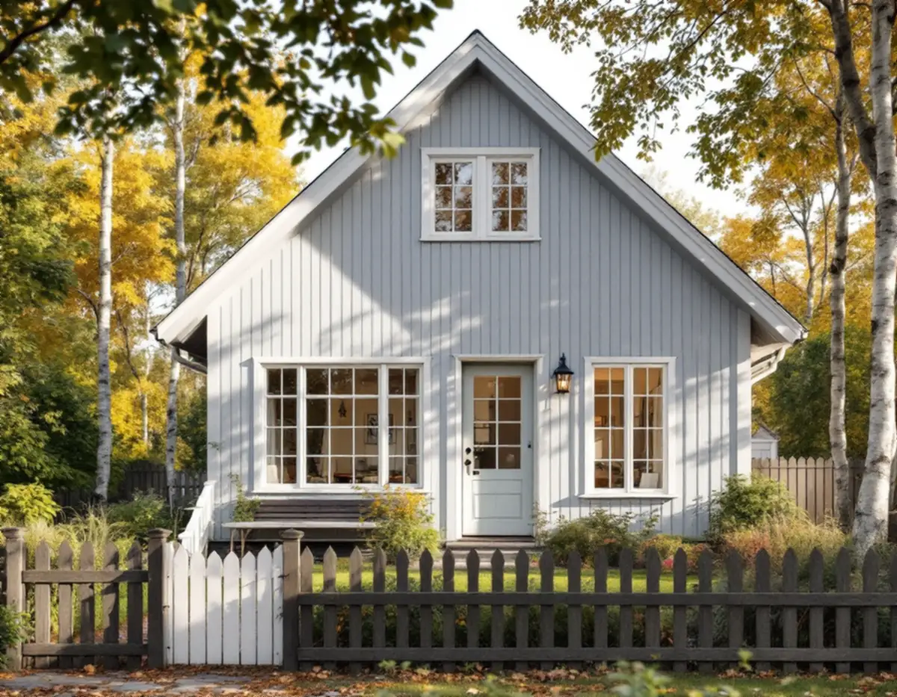
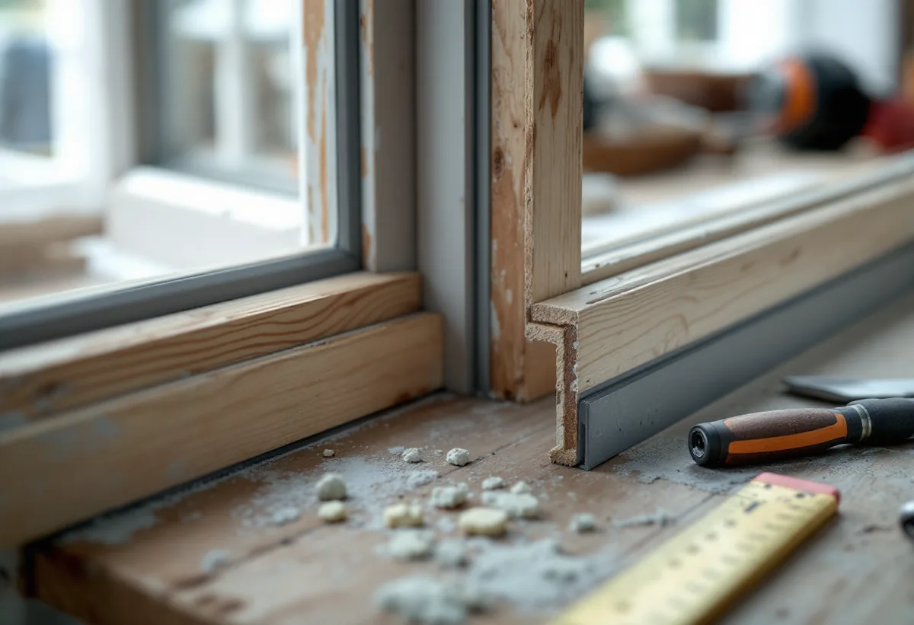

Genomgång
Vi öppnar varje fönster, ser hur bågarna sluter och var det drar.

Ett gammalt fönster som tätas släpper ut mindre värme, men i ett äldre hus kan otätheterna ha varit en del av ventilationen.
Beskriv jobbet kort.
Något blev fel. Kontrollera uppgifterna eller ring 08 12 410 276.
Vi tittar på jobbet på plats innan du får offert.
Du ser vad som ingår och vad det kostar.
Vi drar av ROT direkt och sköter ansökan.
Geal Entreprenad AB, Bromma. Org.nr 559303-7566.

Geal Entreprenad AB renoverar och tätar fönster i Sollentunas villor och radhus och ser till att luften fortfarande har en väg in.
Kommunens översiktsplan berättar att järnvägen mellan Stockholm och Uppsala byggdes 1866 och att Rotebro först var den enda stationen i Sollentuna. I början av 1900-talet tillkom stationer i Tureberg och Norrviken, och då började man också bygga småhus och villor. Planen vill att Sollentuna bevarar den prägel av villastad som växte fram under 1900-talets första hälft, och i Norrvikens villastad, Väderholmen och Skansen ska avstyckningar och förtätningar inte tillåtas där kulturmiljöplanen anger att karaktären är viktig att behålla.
Översiktsplanen skriver också att kommunen i regel inte bör medge förtätningar som förutsätter att funktionella bostadshus rivs, med hänvisning till resurshushållning och minskad klimatpåverkan. Vi ser på fönstren på samma sätt: det som fungerar tas om hand. Kommunens sida om kulturhistoriska byggnader påminner om att de bygglovsbefriade åtgärderna inte kan användas för särskilt värdefulla byggnader och områden, och att ett hus kan vara värdefullt även om det inte finns med i kulturmiljöplanen.
Boverkets energiguide kallar tätning det enklaste sättet att förbättra ett fönster: se över isoleringen runt karmen, drevningen och listerna mellan båge och karm, och renovera bågen eller karmen. Om fönster och dörrar inte är lufttäta ökar energiförlusterna markant, och listerna bör ses över regelbundet.
Riksantikvarieämbetet ger några praktiska regler. Fönstret ska målas och justeras innan listerna sätts upp, och springans bredd kan mätas genom att fästa små klumpar modellera där listen ska sitta. En för tjock list gör fönstret svårstängt och ger spänningar som kan skada båge och glas. Listerna görs främst av gummi och finns i ett par profiltyper för olika springbredder, och det är innerbågen som ska få listen. Äldre kopplade bågar kan vara tunga och sluta dåligt, och ibland behöver de nya handtag och stängningsbeslag.
Boverket varnar för att ett äldre ventilationssystem kan vara inställt efter att luft rör sig genom och kring otäta fönster, och att den luften kan vara en betydande del av tilluften. Den som tätar sina fönster behöver därför också kontrollera behovet av tilluft, så att ventilationen och luftkvaliteten inte blir för dåliga. Guiden påminner även om att bättre isolerade fönster ger kallare rutor på utsidan och därmed större risk för kondens utvändigt.
Sollentuna kommun beskriver tecken på dålig ventilation, till exempel lukt som kommer in genom frånluftsventilerna eller ventiler som inte orkar suga tag i en pappersbit. Som villaägare uppmanas du att kontakta ett konsultföretag för råd. Ska ventilation installeras, eller ett befintligt system ändras mer, till exempel med nytt aggregat, fläkt eller nya kanaler, krävs enligt kommunen anmälan och startbesked. I ett av Riksantikvarieämbetets exempel, ett fönster från 1937, ledde den bättre tätningen tillsammans med en lägre rumshöjd till ökade krav på reglerbar ventilation, och fönstret fick en vädringsventil i bröstningen under karmbottenstycket.
Om badrummets ventilation, se badrumsrenovering i Sollentuna. Är det trafikbuller du vill få bort, läs om fönsterbyte i Sollentuna.
Vi öppnar varje fönster, ser hur bågarna sluter och var det drar.
Vi noterar hur huset ventileras och var tilluften kommer in i dag.
Målning, justering och tätning anges för varje fönster.
Bågarna målas och gångjärn och beslag ställs in före tätningen.
Profilen väljs efter springans bredd och listen sätts på innerbågen.
Vi stänger varje fönster och ser att det går lätt och sluter.
Att reparera och måla fönster i ett småhus räknas som rotarbete, och avdraget gäller även ett fritidshus som du äger. I ett radhus som är en bostadsrätt godkänns bara arbete på insidan av befintliga fönster, som att montera tätningslist eller byta glaset i den inre bågen.
Avdraget motsvarar högst 30 procent av arbetskostnaden, med taket 50 000 kr per person och år och 75 000 kr tillsammans med rutavdrag. Två ägare kan dela på avdraget, men sammanlagt blir det högst 30 procent. Vi drar avdraget direkt på fakturan.
Antalet bågar, hur mycket målning och justering som behövs innan listerna sätts, om beslag måste kompletteras och om innerbågen ska få energiglas påverkar mest. Efter ett gratis platsbesök får du ett skriftligt kostnadsförslag.
Byta eller renovera fönster.
Fönsterbyte i Stockholm →Takbyte, takbesiktning och plåtarbeten.
Takläggare i Sollentuna →Norrviken, Tureberg och Edsberg.
Takrenovering i Sollentuna →Radhus, villa och en extra bostad.
Attefallshus i Sollentuna →Tillbyggnad, tomtdelning och lov.
Byggföretag i Sollentuna →Ny kulör och lov i villastaden.
Fasadmålning i Sollentuna →Buller, ljudglas och radhus i Sollentuna.
Fönsterbyte i Sollentuna →Villastad, radhus och ventilationen.
Badrumsrenovering i Sollentuna →Villor och radhus i Sollentuna.
Fasadrenovering i Sollentuna →Radhus i Sjöberg och villor nära stationerna.
Golvläggare i Sollentuna →Massivt trä eller lamell – vad går att slipa.
Golvslipning i Sollentuna →Villastad och radhuslängor.
Köksrenovering i Sollentuna →Villor och radhus i Sollentuna.
Målare i Sollentuna →Radhusplåt, bleck och rännor i Sollentuna.
Plåtslagare i Sollentuna →Altaner, uterum och bryggor.
Snickare i Sollentuna →Ansökan, solceller och radhus.
Takbyte i Sollentuna →Ny tapet efter prov av väggen.
Tapetsering i Sollentuna →På höjden, nya byggregler och ritningar.
Tillbyggnad i Sollentuna →Radon med i planen för hela huset.
Totalrenovering i Sollentuna →Eller ring 08 12 410 276, mån–fre 08–17.
Beskriv jobbet kort.
Något blev fel. Kontrollera uppgifterna eller ring 08 12 410 276.